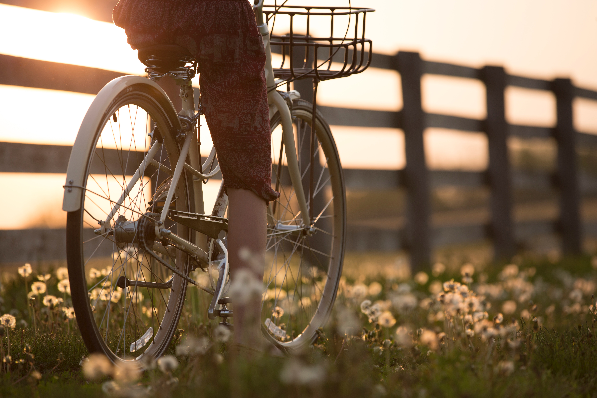

I think you loved me the moment you met me. You saw me and there were sparks in your eyes. I could see them there, and they scared me a little.
It was the beginning of the summer. I walked the few blocks from my house to the restaurant nearby, the sun setting in the southwest and casting a pink glow over the world. The cool evening air washed over me and a calm spread through my body. There was hope in the air, potential.
The restaurant was hosting a tiki night, and it seemed most of the residents of the town were converging there to take part of the festivities. You were there with the guys and I was there alone. I’d invited my roommates, but they’d decided not to join.
There were about seven of us around the small table, drinking daiquiris and bellinis and other vaguely tropical drinks that are about as Polynesian as a tiki party. Nobody minded. The drinks were yummy and the company was good.
You and I hit it off, in a manner of speaking. I hadn’t met you before, though I’d seen you around town and at work. You were intimidating to me, though that’s a somewhat ridiculous thought to me now. I couldn’t tell if you were in costume or not. I later learned that the answer to that question was both. You’re a cowboy, or you at least you pretend to be one. I don’t think you’ve ever been on a horse, but that’s not the point. The point is to look cool, which you didn’t, but you thought you did.
You had an infectious grin, and a laugh that filled the room. You could quote The Princess Bride and Monty Python and the Holy Grail as well as I could – better even. You could do all the voices perfectly.
Later that week I had a bonfire, or my roommates did. I asked if I could invite people and they said I could, so I sent out the hook and you were the only one who bit. The summer was young. I didn’t have a lot of other friends yet.
My roommates didn’t like you, though. They thought you were weird. They weren’t wrong, but I’ve never taken that as a reason to dislike someone.
When they went inside, finally tired of our company, you came and sat next to me on the log bench by the fire. The town we were in for the summer was fairly far north. The sun took forever to sink below the horizon and we stayed up talking long after it set and the stars blinked into life above us.
I could tell you wanted to kiss me, but I didn’t want to kiss you.
Don’t get me wrong, you didn’t force me into anything. But I didn’t want you to kiss me. You smelled of tobacco smoke and dirt. You had wrinkles around your eyes and your brown hair and beard were unkempt. You were funny. Witty. I liked you, but I didn’t want you. Not like that.
But you wanted me. I could feel it radiating off of you. There was an intensity in your light brown eyes that touched a nerve inside of me. It lit a spark in me that sent warmth throughout my body.
I was weak, I suppose. I should have walked away, but I didn’t. I stayed, and I let you kiss me. I kept my hands at my side, head tilted down. You leaned into me. I could feel the warmth coming off of you through my thin sweater.
Your hands went to my waist, my neck, caressing my face. Your hands were surprisingly small and soft. I wanted to recoil from your touch, hated the feel of your soft skin. It was too effeminate, too gentle. I hated this impulse. Hated myself for being so shallow.
Why shouldn’t I kiss you? Why shouldn’t I let you kiss me? You wanted me, and your wanting me felt good. Your hands roamed across my body, over my hips and in between my legs. I didn’t object. I didn’t care to object. You kissed me and kissed me and I sat there and let you.
It wasn’t long before we were an item in all of the important ways. We went out on dates. You visited me at work. People thought we were together, regardless of my own preferences on the subject. The idea was unsettling to me. I’d only just arrived in this place. I had yet to make my mark here, and suddenly it was being made for me.
I wasn’t me anymore. I was a piece of a larger whole that I had never agreed to be a part of.
So I pulled away. I stopped answering your texts. I cancelled plans we’d made. I separated myself from you as best I could in all of the ways I knew that didn’t involve actually talking to you, owning up to my emotions, and letting you have your say. I ran away, heart in my throat.
You chased me. You showed up at my house after work one day. My roommates were out – still at work – so I let you inside and we went to my bedroom. The cramped room felt claustrophobic to me, but I didn’t want to be out in the open with you when my roommates got home. I wasn’t afraid of their judgement. I didn’t care about their opinions of me, but I wasn’t keen to subject you to them.
You sat down on my bed, took off your hat – the one with the feather in the brim that you spent too much money on – and set it down beside you. I stayed standing, arms crossed over my chest, shifting from foot to foot. You stared up at me, eyes calm, waiting.
I didn’t talk. I didn’t know what to say. I paced the small space. I went to the window that overlooked the backyard where the fire pit was. No good. Flashes of the other night. Your lips on my skin. I turned back to you.
“You’ve been avoiding me,” you said.
I bit my lip and looked down.
“Why?”
I sighed, trying to gather my thoughts. I hate talking about important things. I’m no good at it. My mind goes completely blank. When you weren’t there, it was so clear. I didn’t want to be with you. I hated the idea of people thinking we were together. I didn’t like you enough to put any effort into our relationship. You wanted me, and it felt so good to be wanted, but I hated your wanting me, it made me feel sick, but I didn’t know how to turn you down, how to set boundaries, because I didn’t care about boundaries, not really. But knowing how you felt about me and how I felt about you, and choosing to be with you anyways was wrong, wasn’t it? I wished you would just go away and stop complicating everything.
Even as I thought these things, I couldn’t think of anything to say. I didn’t want to hurt you. I couldn’t get what I needed without hurting you. But really, did I need space? Could I live without it? If it meant making you happy, and not making things awkward between us for the rest of the summer, could I be okay with being with you?
I needed to tell you something. You were looking at me with those soft eyes, expectant, understanding. It nauseated me. And it made me sad.
“I don’t want to be your girlfriend.”
Your eyebrows knit together. “I don’t want you to be. Not if you don’t want to be.”
There was a sincerity in your eyes, a gentleness on your face. I had to believe that you meant what you said, or that you wanted to mean it. Because I do think you wanted to mean it. You wanted to make me happy.
I ran a hand through my hair. It was a mess. I pulled it back into a ponytail with the scrunchie I kept around my wrist. I was chewing on my lip so hard I thought I might make it bleed.
I sat down on the edge of the bed next to you, then lay back so my feet were still on the floor, but I was staring up at the slanted wooden ceiling.
“Maybe we can just be friends,” you said, “and just… go with the flow.”
“Go with the flow,” I repeated. “I’m not very good at that.”
“No,” you said, “You’re a Virgo rising.”
I snorted. “So?
“You like structure.”
I sneered.
“I’m serious!”
“That makes it worse.”
You were looking down at me, that smirk on your face that you get when I’ve said something particularly amusing. I wasn’t trying to be amusing, but you were successfully distracting me from the anxiety clouding my mind.
“Don’t worry,” you said. “I’ll show you how. I’m a Sagittarius.”
I sat up, looking at you with a slight pout on my lips. I examined your face closely, the way your moustache hung over your top lip, the lines that framed your eyes and mouth.
No, I didn’t want you. If you hadn’t wanted me so badly, perhaps we could have been friends – best friends, even. If I’d wanted you even half as much as you wanted me, maybe we could have made a go of it. As it was, we were at an impasse.
You leaned in, then hesitated and looked me in the eye.
I should have walked away. I should have stopped you.
I didn’t. I stayed, and I let you kiss me. I was weak and scared and, worse, when it came down to it, despite all of my anxiety about what to tell you, I just didn’t really care either way.
The thing is, I was never looking for you, and so when you found me, I slipped into you like slipping downstream in a canoe, not paddling one way or another. It was effortless, and because it was effortless it was easy, and because it was easy I didn’t have to try, and because I didn’t have to try I didn’t have to care.
I remember one night, closer to the beginning of the summer than the end. You and I were at a play at the little theatre in the upper part of town. When the play ended it was just dark out. There was still some light on the horizon, but the sky was also awash with stars. There’s something so magical about a perfect starry night.
We were walking home. We both lived in the lower part of town, at the bottom of the hill, past the creek and the general store. Past the restaurant where we’d met. You walked me home, hands in the front pockets of your jeans. I wrapped my arm around yours for warmth. It never really got hot that summer, not like I was used to down south.
We got to my house, but the lights were still on. My roommates were still up, probably watching a movie. I didn’t want to go inside. I only really hated one of my roommates, the petite blonde girl who’d decided early on not to like me. The others were tolerable, but she’d turned them into her lackeys. Separately, I could handle them. When they were all together I found it was better to just avoid them.
I unhooked my arm from yours and kept walking. “I don’t want to go home yet.”
“Alright,” you said.
I looked back at you, in your wool vest and wool blazer. Your hat was pulled down so that it cast your face in shadow. Only your smirking mouth and a slight gleam from your eyes were visible.
I was walking backwards, looking at you. The dirt road was wide open behind me. “You would follow me anywhere, wouldn’t you?” I cooed at you, only half mocking.
Your smirk tightened a little. I wondered if I’d stuck a nerve, but if I did you didn’t let it show. “Yes, ma’am,” you said in your cowboy voice.
I wasn’t sure what answer I was hoping for, but this wasn’t it.
I looked up at the stars glittering high above and spun around a few times, focusing on one star just above me. The others blurred as I spun, but that one star stayed in sharp focus. My star, my focal point. It winked at me. I laughed, and spun and spun, bringing my hands to my head as I did.
“What are you doing?” you asked me.
“What does it look like?” I called back.
“You’re going to make yourself sick.”
I rolled my eyes at you, even though you couldn’t see it.
I was getting dizzy though, or I knew I would be once I stopped spinning. After another moment, I sighed and finally slowed to a stop. The world kept moving and shifting. I would have fallen over, but you caught me, as I knew you would, your hands on my arms.
The world settled back into place after a moment, so I ignored your hands and kept walking.
The wide dirt road made a large arc up the hillside and back down. I walked it in silence, enjoying the sounds of crickets and owls, and the smell of pine and nighttime. You followed me, as I knew you would. There was a part of me that was hoping you wouldn’t, that you’d bid me goodnight and go back to your house.
But then I’d be alone. Alone with my thoughts and the stars and the owls. And I didn’t really want that either.
“What are you thinking about?” you asked me. We were on the downhill slope now, coming back around towards the main road.
I was looking up at the stars, face tilted towards the sky and the moon and the universe. I was tempted to say that I wasn’t thinking about anything, or that I was enjoying the night. It wouldn’t be lying, really. But I didn’t.
I told you that you should stay away from me. I wasn’t good for you. I’d break your heart. You let me get away with too much.
“Maybe,” you said, your hands in your pockets, chin down so I couldn’t see your eyes, your expression, past the brim of your hat.
I turned back to look at you. I was ahead of you, walking backwards, forwards, spinning in circles, face always tilted up to the blue-black sky.
“Definitely,” I insisted. “You’re too good to me.”
You shrugged. You had that look on your face. I knew it well, but hadn’t realized what it was until my mom came to visit. I’d brought you by the campsite where my family was staying. She said you looked at me like you wanted to kiss me, and I knew she was right. Every time you looked at me, I could feel it. You wanted me.
I think that’s why I couldn’t let you go. Or at least, that was part of it. It feels good to be wanted. In a way, it’s all I’ve ever wanted. I just never seem to know what to do with that want when I have it.
“I can handle myself,” you said. “I’m a big boy.”
I tilted my head, narrowed my eyes at you, and pursed my lips slightly.
You were giving me permission, in a way. I still think you were wrong to give it. Still think I was wrong to accept it. I think things would have gone better for us if you hadn’t let me walk all over you. But the thing is, when someone gives you permission to take advantage of them, can you be blamed for then doing it?
The answer, of course, is yes. I still should have treated you better. Even now, I should treat you better. You’ve always been so good to me. But you never demanded the same in return.
It’s not that I didn’t care at all. That would have made it all too easy. I cared a lot. I still do. It’s difficult to explain, impossible to make you understand what it is exactly my feelings are or were, since I don’t understand them myself. All I can do is tell you my side of things in all the details I have, and hope you can piece together what it all means better than I can. You’re good at that kind of thing. You’re a Sagittarius, after all, whatever that means.
You were sober for four years, for good reason, so I’m told. Before you quit, you were always drinking or drunk, or hungover.
You never did tell me the exact thing that made you decide to stop drinking. There’s usually a reason with these sorts of things. A moment. Rock bottom. Maybe you didn’t hit rock bottom. Maybe you just decided you were tired of being drunk. I don’t know. It doesn’t really matter.
And I don’t know what made you drink that night. I don’t know if you’d decided that it would be okay to have one, and one turned into two, which turned into twenty. I don’t know if you were having a good time, and couldn’t see the harm, or if you were depressed and just didn’t care.
I was on my way to work, coasting on my bike down to the main road. It was early. I started work at nine and I liked to give myself an hour to bike there. It was a bright, sunny morning until I saw you.
You were across the way, your silhouette unmistakable in your hat and poncho. I knew at a glance there was something wrong, though. You were crossing the street, your head down to protect your eyes from the sun. I thought you were going to get hit by a car. You weren’t walking straight, stumbling and swaying from side to side.
My stomach twisted.
I turned my bike and pedalled towards you, checking the street each way before I crossed. It wasn’t busy, especially not at that time of day, but I was feeling cautious, worried as I was.
You didn’t look up or stop walking as I brought my bike to a halt a few feet away on the side of the road. It wasn’t until I said your name that you noticed me. You squinted at me for a moment until I kicked down the stand on my bike and dismounted.
The town was peaceful and quiet, the sunshine bright but not strong. In that moment though, my reality changed. Confusion and worry filled my head with noise, and the world seemed darker around me.
I took your face in my hands, looking you in your eyes, which you couldn’t seem to focus. “You don’t look so good,” I said. I stroked your cheeks with my thumbs.
Your eyes wouldn’t stay open. You took a deep sigh. “I’m okay.”
“I don’t believe you.”
I didn’t know what to do. I didn’t know what to ask, or how hard to press you. I didn’t know if you needed sleep or a doctor or a psychologist or all three. I had to get to work but I didn’t want to leave you like this, stumbling through the streets.
You put a hand on my waist, though not in an affectionate way. You were steadying yourself. “I… had a rough night,” you said after a moment.
I gave a nervous chuckle. “Looks like it. Maybe you should go home and get some rest.”
You nodded, closing your eyes. “I’m gonna.” You didn’t move.
“Do you want a hug?” It was my only other idea, my go-to remedy.
You didn’t open your eyes, just nodded.
I wrapped my arms around your neck, pulling you in tight and kissing you on the cheek. Your hands wrapped around my waist, though softly, as though you didn’t have the strength for anything more.
I held you there for a minute and let you rest. When you finally pulled away, you seemed somewhat steadier. I watched you walk up the street towards your house. There was a bad feeling in my gut. There is now when I think about that morning. You never did tell me what happened, not really. I never really asked, I suppose, but I’m not good at asking questions. I don’t like prying.
You and I are similar in a way I wouldn’t have expected. We both have secrets, but the biggest secret we keep is that we keep secrets at all. We feign openness and honesty and a willingness to share. We’ll tell anyone our embarrassing stories, our most painful memories, but only so they won’t ask about the things that really haunt us.
You and I, we wear fake hearts on our sleeves.
That morning I saw your real heart, if only just for a moment.
I showed you mine once, late in the summer. We’d been at the bar for no reason in particular besides the fact that it was a Thursday. We’d been out with our friends. We had a core group, you and me and three other local guys.
I was drunk, and you were walking me home from the bar. It was late, and I was tired, doubly so for having been drinking.
I was happy, though, elated, as one can only be in the summer while drunk, after having been out with people you love. And I love my friends, each and every one of them.
As we walked down the hill, along the main road, I skipped and danced, and breathed in the wonderful fresh air. It had been raining earlier that night and the air still held the smell of water and metal and life. I jumped in a big rain puddle, letting the mud get all over my leather boots.
And then I stopped. A thought occurred to me. A shard of ice pierced my heart. Fear. Fear. Fear.
“What’s wrong?” you asked. You were walking a few feet behind me, as usual.
I looked at you sharply. For a moment I’d forgotten you were there. “Oh. Nothing,” I said. I shook off the sudden unhappiness and grinned, saying the first thing that came to my mind. “Do you think the moon is really made of cheese?” I threw my hands up to the sky and twirled around once. It was cloudy. I could only see a hint of moonlight through the thick cover.
You chuckled. “It is if you want it to be.”
I kept walking, running for a moment and then slowing again. I turned around, walking backwards to face you. “No thanks,” I called to you. “I’m lactose intolerant!”
This time you really laughed, a full belly laugh. “You’re ridiculous.”
Another shard of ice. I froze in place, my whole body tense. My shoulders curled inwards. Fear. Insecurity. Anxiety. My face twisted in pain.
“You keep making that face,” you said. “What’s wrong?”
I’d forgotten about you again. I snapped my attention to you and grinned. I shook my head. “I’m just drunk. Pay no attention to me.” I laughed. “Oh wait. That’s impossible for you.”
You raised an eyebrow, but you were smiling. “You’re a bit of a brat.”
“Only a bit?” I laughed and span around once.
We were nearing my house, which was nearly invisible on the pitch black street. It was so dark here, away from the few streetlamps of the main road. It could almost be spooky, but I wasn’t afraid of the dark.
I stared at the house. A third shard of ice. I couldn’t breathe. Oh god. This pain. It racked my whole body. I clutched a hand to my stomach. The anxiety sent jolts through me.
You put your arms on my shoulders and stared into my agonized face. “What is it?”
Tears were pooling in my eyes. I debated not telling you. I could shake it off again. I could tell you I was fine and go inside and never tell you how I was feeling. But I was drunk, and I didn’t really want to do that.
“Do you think they like me?” I whispered.
“Who?” you asked.
“The others. The guys. Do you think they like me?”
Your eyebrows furrowed. A look of confusion crossed your face.
“I really love hanging out with them. And I really love it here. And I really love having friends. I’m not used to having so many friends.” I wasn’t doing a good job of explaining. “I just feel like, no matter what I do, I’m not… I’m not a part of things yet. I’m not…”
The tears leaked from my eyes and I gave a hiccupping sob. I buried my face in my hands.
Once the tears started, there was no stopping them. My legs shook and I collapsed onto the ground. You were laughing a little. I knew how ridiculous I was being. I didn’t hold it against you.
“I think the others like you,” you said, sitting down beside me. The ground was a mess of mud and dirt, but you didn’t seem to care.
I shook my head, bringing my head up and gulping in air. “Well, duh! I’m very likeable.”
“Yes…” you agreed.
“But do they like me? Am I their friend?”
You put your arms around me. “You’re their friend.”
This made me cry harder. I buried my face in your wool jacket. You were okay with this. I knew you would be. I knew you wouldn’t judge me, or think worse of me. So I cried into your shoulder and let you comfort me.
We stayed like this for several minutes, until I couldn’t cry anymore. My tears slowed and dried up, though my face felt raw and warm.
After a moment, I lifted my head again and wiped my nose and eyes with the back of my sleeve. “I just care a whole awful lot about people.”
“I know you do.”
“And it feels like people don’t care about each other so much and I don’t like it, because when you care a whole awful lot about someone, you want them to care a whole awful lot about you too.”
“True.” You took a moment to think about this. You understood my dilemma, even though I hadn’t explained it very well. I think at your core you knew why I was upset. “I think… the guys probably don’t care about you the same way you care about them. They’re… well, they’re guys.”
I pounded my fists against your chest, hard enough to get my frustration out, but not so hard as to hurt you. “That’s not good enough! Why is that an explanation? Oh, they’re guys so they’ve been fed some societal bullshit their whole lives and now they can’t care deeply about anyone they’re not in a romantic relationship with.” I was scowling at you, as though I expected you to dissolve the patriarchy right there and then. “It’s not okay.”
You were chuckling, a sort of condescending chuckle reserved for drunk girls whose emotions are getting the better of them. “No. No, it’s not.”
“And your pants are getting all muddy.”
You looked down at the wet ground and shrugged. “I have other ones. And a washing machine.”
I stuck my lower lip out. “It’s really upsetting me.” This was a lie. I couldn’t have cared less, but I wasn’t paying much attention at all to what I was saying.
“Should we get up?”
I nodded.
You stood first, then hauled me to feet.
“Are you feeling better?” you asked.
I scrubbed at my face with my hands. “I’m just… tired.”
“Then you should go to bed.”
I nodded and let out an enormous yawn. I wrapped my arms around your neck and pressed my lips to yours. We kissed goodnight and you watched me walk to my door. I didn’t look back.
My birthday came at the end of the summer and we’d been… not together, but together enough. Our friends thought we were together. You accepted that we weren’t even though you wanted to be. I was… me. I was always just me. Dancing in the rain, running down the dirt road at night, giggling during sex because I thought of something funny. And you came along for the ride.
We were all at the smaller of the two bars in town, sitting at the long table that was carved out of a large slab of wood. You bought my drinks. It was part of your present to me. At the end of the night, when the bartender told me you’d paid my tab, I threw my arms around you and kissed you all over your face while you laughed and whispered in my ear, “Happy birthday, brat.”
You reached into your back pocket when I let you go. “I have something else for you,” you said. I tilted my head and you handed me a piece of paper.
It was the sweetest gift I’d ever been given by anyone. It was just a slip of paper, folded over once. I unfolded it. You’d drawn a picture of me in pencil. It was simple, just a doodle, but you’d captured my hair, my crooked grin, my hips that you loved so much. And below the drawing you’d written three words: “As you wish.”
I bit my lip. It was a quote from The Princess Bride. You knew I knew it well. You knew I’d know what it meant. A hand clutched my heart and gave it a squeeze, and then an evil sort of satisfaction rolled over me that I couldn’t fight.
You loved me.
It’s not that I was surprised by this fact, per say. I knew you loved me. We knew each other better than we had any right to, having only met a few short months earlier. I’d just never expected you to tell me you loved me.
This was a temporary thing. It always had to be. We were from different towns, and would be leaving here soon. Our breakup, if that’s what it was, was a foregone conclusion.
But you loved me. You thought we could make this work. You were so earnest, so sincere in your affection that I couldn’t have ended things even if I’d wanted to. You were five years older than me and yet somehow, you were the naïve one and I was the cynic.
Didn’t I tell you? That night under the stars, didn’t I tell you I would break your heart?
As the bar closed that night, we filtered into the cool night. It was rarely hot this far north, even in the dead of August, and especially not at night. It wasn’t cold, though, just a bit breezy. I shivered a little and pulled my jacket around me. You wrapped an arm around my waist and pulled me closer.
We were the only ones heading down the hill towards the lower part of town, so we set off walking. The town was tiny. Nothing was more than a twenty-minute walk away, even if you were taking your time.
And we did take our time. From the top of the hill, the valley stretched out before us, trees swaying softly in the night breeze. Mist rolled up from the river blew across town, bathing everything in white, impenetrable fog. But above us was awash with stars, like precious gems burning in the darkness. The stars are magnificent in that part of the world. On a night like that one, when I was a little bit drunk, they appeared like teardrops and diamonds, and bright burning candles, fierce and joyful and cold and unending.
The view brought tears to my eyes. I was so full, so happy. I had friends, more friends than I’d ever had, friends who loved me. They’d gotten drunk with me, and danced, and played games, and we’d all been happy together. There wasn’t a bad feeling that entire night. In that space of time, in that place, there hadn’t been sadness or anger or anxiety. Only happiness.
“I love you too, you know,” I said to you. My voice came out quiet.
You looked at me, grinning. “I didn’t actually say it.”
I elbowed you in the ribs. You were right of course. “You meant it,” I said.
You smiled for a moment and looked out over the shadowy town below us. We’d been living there for about four months now, and you would be there for another month, even though I was leaving in just a week. I had to go back to school, go back to my job, my life. I wouldn’t forget about you, or this summer, but you would fade. I knew you would fade.
“I love you,” you said finally.
I kept walking, grabbing your hand and pulling you along behind me. “I know.”
A few weeks later my parents drove up to take me home. We all went out for breakfast early on a beautiful, sunny morning, and then we hit the road.
I shouldn’t have kissed you that last time on the boardwalk outside the restaurant where you were working. I should have said goodbye and left it at that.
Like I said, I’m a coward. It was easier to kiss you, and nod when you told me to keep in touch, and smile and walk away.
You watched me walk away, and I didn’t look back.
It’s not that I lied about loving you. Loving someone is knowing them, admiring their good qualities and accepting their flaws. By that metric, then, I did love you. I still do.
I love a lot of people, more than I can count. I think I fall in love a little with almost every person I meet.
I loved you. But I was never in love with you. You made me laugh. You held me and you were comfortable. You were sweet. You were as easy as breathing.
But love, real love, requires something more, something we never had. I don’t know what it is exactly. Respect, maybe, or passion.
So, no matter how much I loved you, I could never be in love with you. And I’m sorry. I’m sorry I never answered the last text you sent me. I’m sorry I told you I loved you and then left you behind. I’m sorry I used you to feel better about myself. I’m sorry that you let me.
There is no happy ending to this story. We haven’t talked in a while, and I don’t know if I’ll ever see you again. But I’m telling you this so you’ll know that I was wrong. I messed up. I didn’t treat you right, even though you were nothing but good to me. I can make excuses for my actions. I can blame you. I can apologize, but that doesn’t change what happened.
I learned a lot from you. I learned what happens when you ask for nothing in a relationship. I learned that even a good person will treat someone badly if they’re never held to a higher standard. I learned that sometimes, no matter how badly you want to be in love someone, sometimes you just can’t be. It isn’t there and never will be.
I wish you would be angry with me. I wish you would hate me. I wish you would blame me as much as I blame myself. I know you never will, but I wish you would. I wish you would look back on us and know I should have acted differently, but so should you have.
I hope you learn to love yourself for all of the amazing things that you are. I hope you find someone who treats you better than I did. I hope you know that you deserve it. More than anything, I hope you let me go.
Yours,